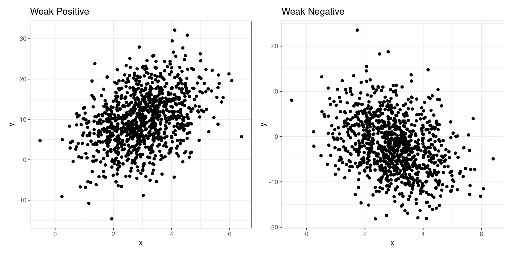

#> [1] 1450 1120 2450 2380 980 1430 910 3580 2400 1340 740 950 530 840 1130
#> [16] 1640 1350 1640 1730 5960 2170 1930 3200 2500 2140 1630 3640 1430 570 4800
#> [31] 550 2240 4220 1400 2820 1900 3650 760 1250 880 1800 1370 550 640 1160
#> [46] 1570 1340 1740 2870 3120 2780 2240 2550 1470 1240 1150 2850 960 870 1340
#> [61] 2630 1850 2830 1740 2780 1260 2340 3240 940 830 960 870 920 1130 1060
#> [76] 740 950 2340 2660 2430 2690 1540 1240 2870 2450 1830 2360 2640 2840 2640
#> [91] 3070 2820 2640 870 3220 1980 410 640 2730 1360 760 1240 800 2540 2130
#> [106] 2670 1940 2140 1960 1640 1850 2370 2530 2720 2250 3240 3530 2340 2460 1340
#> [121] 950 2240 3050 1630 1120 3340 3560 2460 3860 3230 3760 3640 4230 3590 3740
#> [136] 4200 3840 4350 3960 4150 4450 3460 2850 3560 4130 4350 4420 2130 2450 2300
#> [151] 2850 2640 3250 2530 2780 2740 2530 1876 2340 2244 2980 3460 1840 1360 1880
#> [166] 2460 2260 2890 2140 2570 2030 1940 1870 1920 1920 2230 980 650 430 390
#> [181] 490 210 560 470 390 460 530 460 340 360 2540 2870 2230 2340 2560
#> [196] 2340 2480 2540 2980 3250 3340 2850 3220 2110 3670 2890 1460 3240 3530 2760
#> [211] 2980 2430 1500 1270 1340 2780 2910 2760 2950 2550 2720 2540 2370 2250 1260
#> [226] 950 1020 2250 1130 1240 1950 1460 2210 2470 2150 970 840 790 750 810
#> [241] 790 670 710 730 820 760 670 730 750 820 1580 2130 2350 2460 1220
#> [256] 950 400 1050 1480 1300 1650 2130 2340 1890 1420 1280 1140 870 940 620
#> [271] 1560 1720 1890 1760 890 710 620 780 540 670 820 540 730 910 710
#> [286] 1750 1320 2740 1120 2100 3110 1200 1390 940 1220 1960 2150 2380 1440 1080
#> [301] 1840 2100 1500 660 590 1200 2610 1820 1080 790 1240 780 480 300 990
#> [316] 1110 580 2200 1900 2800 840 680 300 240 1015 2150 580 1400 800 1110
#> [331] 1980 1040 940 600 460 980 1880 900 1740 1140 2040 2800 1800 3300 1880
#> [346] 2000 2680 950 3700 1900 3600 2400 4400 980 1980 3600 2200 2800 4200 800
#> [361] 1400 1800 2210 980 2800 1900 2780 2440 3400 920 1260 1980 1000 960 640
#> [376] 860 590 1800 3600 2300 3900 2900 1850 3400 980 750 500 3200 3800 1850
#> [391] 2800 980 3200 2800 2640 1200 510 660 480 2900 2300 1980 1040 900 3400
#> [406] 1800 3000 2800 950 3800 800 760 540 340 600 480 2100 1840 1100 2650
#> [421] 1900 900 1880 1240 3000 2300 1400 2050 3250 2100 2450 4050 3800 3000 2200
#> [436] 3500 1800 1250 2200 1640 1080 1790 2080 1600 2200 2000 1200 980 800 1200
#> [451] 1800 1440 1600 2400 1900 2100 1200 720 800 2200 1600 1000 3000 2700 2300
#> [466] 1900 5800 1800 2200 3400 4400 3400 2500 1600 1200 1040 4400 4800 1800 3600
#> [481] 3000 4200 1400 2800 1800 3400 2600 3300 4100 1800 3500 2900 850 680 3100
#> [496] 1750 980 2800 1200 840 1040 500 800 640 900 660 750 3800 2900 1800
#> [511] 2700 4200 3000 1200 600 4400 3100 2800 1100 3400 2800 800 1800 540 3300
#> [526] 2800 900 2100 3200 1440 800 540 2900 2000 960 3200 1250 2900 2100 3600
#> [541] 1400 3900 3000 1800 2700 2400 2900 1400 3900 4200 2800 1900 960 640 750
#> [556] 500 3500 2900 2100 3200 1800 1500 2100 1000 2900 1600 2100 1700 2400 3600
#> [571] 2700 2900 1800 2200 3000 2100 1000 2700 2200 3100 3400 4000 2100 1900 2300
#> [586] 3200 1200 3400 2100 980 540 1100 750 1800 2300 3400 2700 3000 3800 4200
#> [601] 1800 2000 3300 4200 1200 2200 850 980 300 450 80 1800 2200 3400 3100
#> [616] 2600 1800 1200 2200 1400 2100 1600 2000 3200 2100 1400 880 2000 1200 1950
#> [631] 9540 8350 8590 7830 8210 9830 9240 9540 8230 7540 8490 9610 7960 8870 7420
#> [646] 8250 8472 7530 2340 2210 2670 657 2290 2110 7340 9230 1020 900 1140 1350
#> [661] 1200 1090 920 3150 6970 9100 8400 6500 4400 3600 4000 3700 4057 8800 6800
#> [676] 5900 7500 8000 4400 6600 3800 4800 4400 5200 6400 5900 4800 5600 7200 4400
#> [691] 5400 4800 6700 6000 6800 5950 7200 6400 5300 4900 4400 5000 4900 4800 5800
#> [706] 3600 4200 5000 5400 6400 4000 4300 5100 3900 2700 3000 4100 3900 4400 4900
#> [721] 3600 4500 5000 5400 3400 4800 3800 2900 3200 4200 2900 NA 3400 4100 3900
#> [736] 4900 3400 5100 4200 2900 3800 3200 4000 1150 2320 3450 1490 920 1010 680
#> [751] 1800 2700 950 103 1850 1200 1050 1860 1180 1050 1420 1800 1500 1200 860
#> [766] 640 1400 980 2100 1100 2400 1500 2200 1200 2000 1800 1000 2100 2400 2700
#> [781] 3000 980 240 840 1800 1000 500 12 2400 1000 1800 300 2100 2400 1200
#> [796] 1800 2100 280 480 150 1400 980 40 640 800 1000 810 500 1800 840
#> [811] 500 1500 480 1000 1200 450 280 150 0 0 2100 1800 1400 980 3000
#> [826] 2400 1100 340 1200 600 2300 1200 3000 4200 1800 980 2100 3200 1050 2700
#> [841] 980 1400 800 640 240 2100 2800 1600 1200 2200 980 540 320 270 1200
#> [856] 360 120 480 0 2400 3200 2500 1800 250 240 640 180 540 0 0
#> [871] 2800 1600 980 480 720 0 360 2100 2900 2100 1800 2900 3200 1800 1600
#> [886] 2800 1200 2100 2500 1800 1600 2100 1200 980 2500 1900 2100 1200 900 800
#> [901] 480 720 1600 2400 800 500 640 900 1400 2100 1900 960 2400 1800 2700
#> [916] 1500 930 2100 3000 1600 1200 4100 5400 4400 5000 3400 4900 2500 2700 1300
#> [931] 800 440 2100 3200 1100 800 540 4100 3300 1500 850 440 2800 1200 1400
#> [946] 880 750 1800 400 10 1400 600 2500 1100 2300 1000 1300 500 700 20
#> [961] 0 1800 680 2800 3300 2900 1800 2800 1000 2500 950 360 0 3400 2700
#> [976] 3200 2800 1600 2900 2000 2500 1400 800 1500 2100 1400 980 1800 500 1200
#> [991] 180 0 0Numerical Data
R Packages
- csucistats
- tidyverse
Motivating Example
Summary Statistics
Summary Statistics
Numerical Statistics in R
Data Visualization
Scatter Plots
What is numerical data?
Summary Statistics
Summary statistics are used to describe the distribution of data.
Central Tendency
Central tendency is a statistical concept that refers to the central or typical value around which a set of data points tends to cluster. It is used to summarize and describe a data set by identifying a single representative value that provides insights into the data’s overall characteristics.
Variation
Variation in statistics refers to the extent to which data points in a dataset deviate or differ from a central tendency measure. Understanding variation is crucial for making informed decisions, drawing meaningful conclusions, and assessing the reliability of statistical analyses.
Minimum
The minimum (min) is the smallest value in the data.
Maximum
The maximum (max) is the largest value in the data.
Quartiles
Quartiles are three values (Q1, Q2, Q3) that divides the data into four subsets.

Q1
Q1 is the value signifying that a quarter of the data is lower than it.
Q2 - Median
Q2 is the value signifying that half of the data is below it.
The median also represents the central tendency of the data.
Q3
Q3 is the value signifying that 3 quarters of the data is below it.
Interquartile Range
\[ IQR = Q_3 - Q_1 \]
Range
\[ R = \mathrm{max} - \mathrm{min} \]
How to identify the quartiles?
- Sort the data
- ID Max and Min
- Find the amount of data the makes a quarter:
- \(K=N/4\)
- Create 4 groups using the sorted data
- group by data size
- If \(K\) has a decimal, the \(Kth\) value is quartile of each group.
Mean
Describe how you will find the mean of these numbers:
#> [1] 10 14 22 24 10Mean
The mean is another measurement for central tendency.
\[ \bar X = \frac{1}{n}\sum^n_{i=1}X_i \]
\(n\): total data points
\(X_i\): data points
\(i\): indexing data
\(\sum\): add all from first (bottom) to last (up)
Variance
The variance is a measurement on the average squared distance the data points are from the central tendency.
\[ s^2 = \frac{1}{n-1}\sum^n_{i=1}(X_i-\bar X)^2 \]
Standard Deviation
The standard deviation is a measurement on the average distance the data points are from the central tendency.
\[ s=\sqrt{s^2} \]
Outliers
These are data points that seem to be highly distant from all other variables.

Numerical Statistics in R
Summary Statistics
Numerical Statistics in R
Data Visualization
Scatter Plots
Numerical Statistics in R
Mean
Median
Standard Deviation
Variance
Quartiles
Max and Min
Summary Statistics
Mr. Trash Wheel
Data Visualization
Summary Statistics
Numerical Statistics in R
Data Visualization
Scatter Plots
Histogram
A histogram is a graphical representation of the distribution or frequency of data points in a dataset. It provides a visual way to understand the shape, central tendency, and spread of a dataset by dividing the data into intervals or bins and showing how many data points fall into each bin as a bar.
Histogram R Code
Histogram

Histogram

Histograms

Histograms

Mr. Trash Wheel

Box Plot
A box plot, also known as a box-and-whisker plot, is a graphical representation of the distribution and key statistical characteristics of a dataset. It provides a visual summary of the data’s central tendency, spread, and potential outliers.
Box Plot

Box Plot R Code
Box Plot

Box Plot

Dot Plots
Dot Plots are similar to histograms, but they incorporate dots to count how many data points fall within bins.
Dot Plots in R
Dot Plots

Scatter Plots
Summary Statistics
Numerical Statistics in R
Data Visualization
Scatter Plots
Scatter Plots
Scatter plots demonstrate how two variables behave with each other. They can tell you any postive or negative trends, if they exist, with the combination of the plots.
Positive Relationship

Negative Relationship

No Relationship

Weak Positive or Negative Relationship
Scatter Plots in R
Mr. Trash Wheel